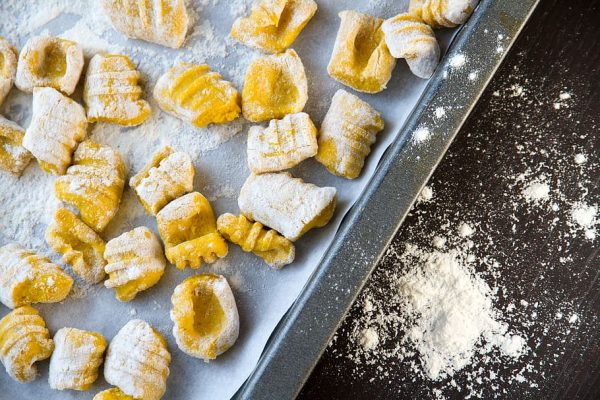

Gnocchi

Mozzarella-stuffed pumkin gnocchi:
This recipe will teach you how to prepare mozzarella-stuffed pumpkin gnocchi
This is an easy and delicious recipe for those cold winter nigths to prepare with your loved ones
Ingredients
- 1 pumpkin
- 1 egg
- 2 cups flour
- salt & pepper to taste
- 500gr mozzarella
Steps
- Bake the sliced pumpkin in the oven until its soft, approx. 50 minutes
- smash it with a fork to make it puree, and add the egg and the flour
- Make them into little balls and add the mozzarella pieces inside
- Bring water to a boil and add the gnocchi
- Once they start floating they are done